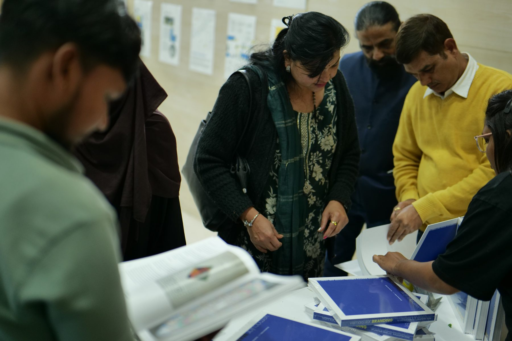
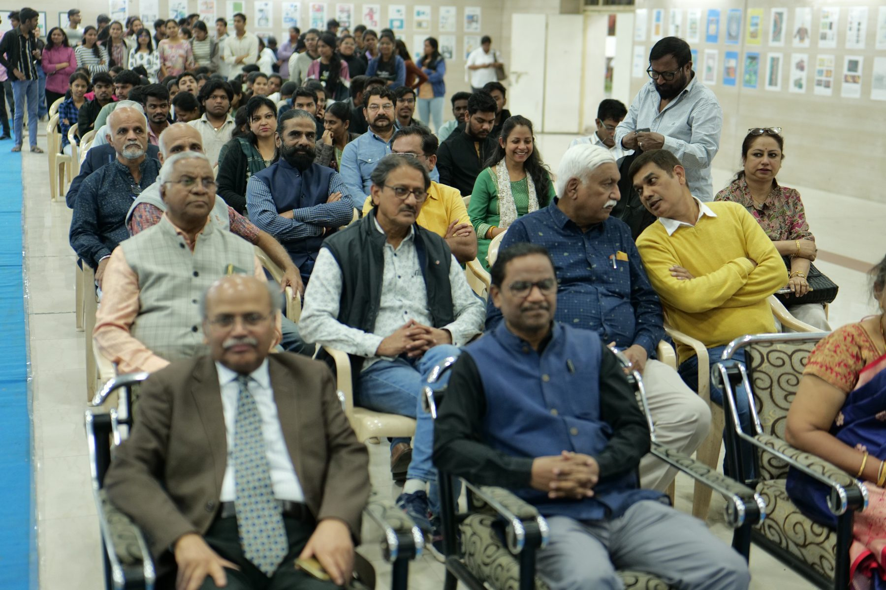
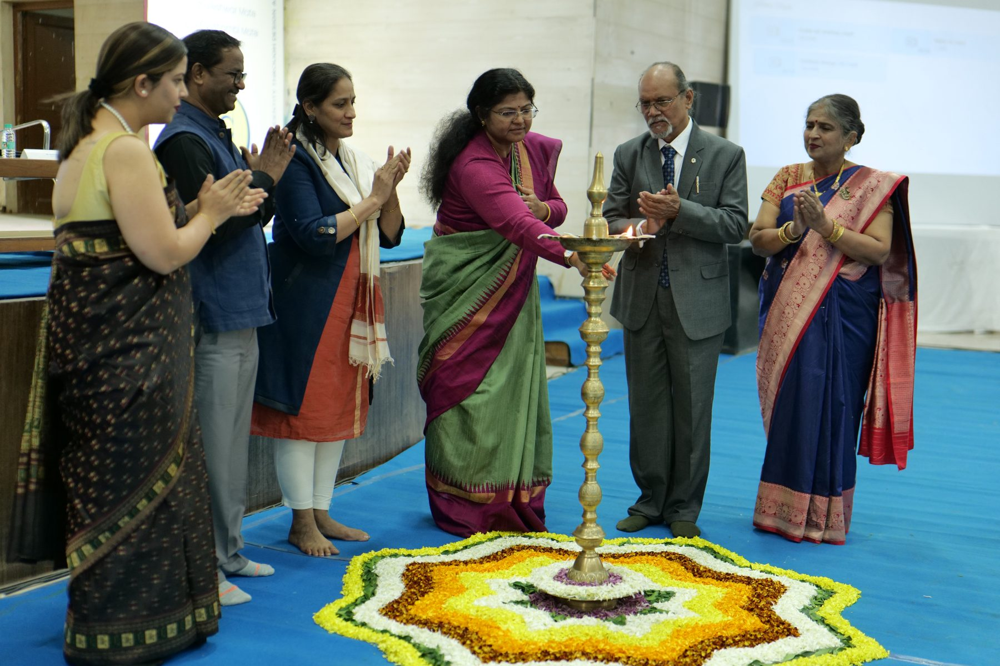
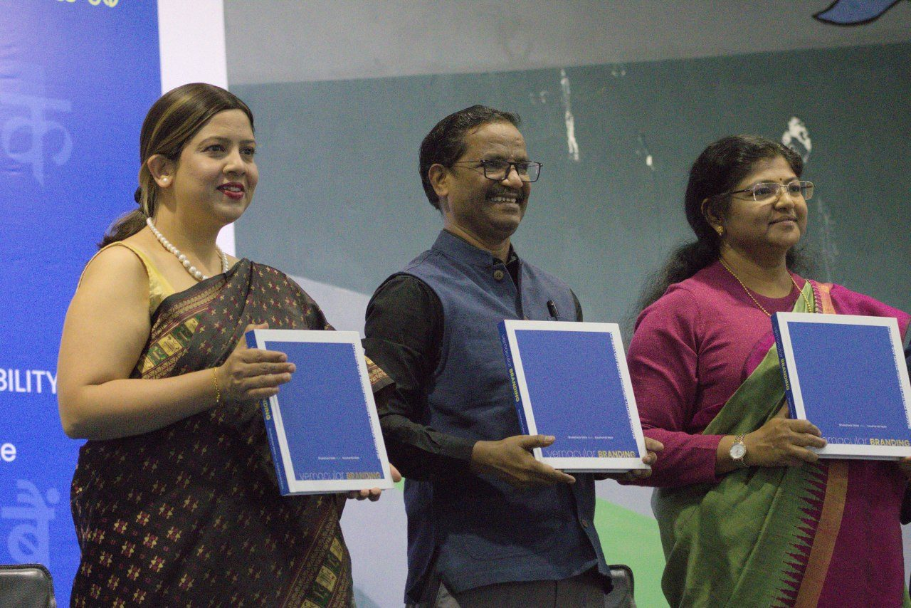
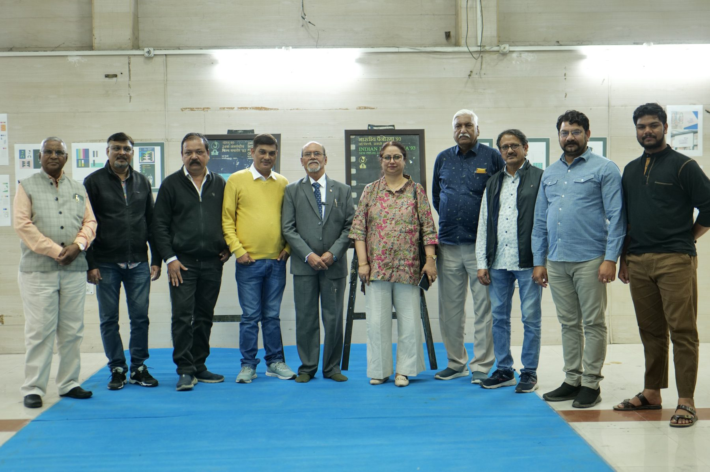

First Edition · December 2025 · ISBN 978-93-344-2686-1
vernacularBRANDING
Reading Identity Through Design and Visibility
Prof. Bhuleshwar (Arun) Mate & Kaushambi Mate
A seminal documentation of India’s informal visual landscape — five decades of hand-painted typography, improvised signage and everyday branding systems, gathered in a hardcover research archive.
01 — The book
A richly illustrated, tactile object
This hardcover edition brings together extensive fieldwork, archival documentation, and insightful essays — five decades of Prof. Bhuleshwar Mate’s street archive, read through contemporary design research.
- Publisher
- Self-published, Bhuleshwar Mate, Nagpur
- Edition
- First Edition, First Printing · December 2025
- Format
- Hardcover · 254 × 254 mm pages · 200 pp
- Outer dimensions
- 260 × 260 × 22.5 mm (square)
- Paper
- 170 gsm Indian Art Matte Paper
- Finishing
- Cover with gold foil embossing
- Printer
- Pragati Offset Pvt. Ltd., Hyderabad
- Weight
- approx. 1,400 g
- ISBN
- 978-93-344-2686-1
02 — The work
From the Street to the Studio
Vernacular Branding is an intergenerational collaboration between Prof. Bhuleshwar Mate and Kaushambi Mate.
It translates lived visual culture into a structured design discourse.
While contemporary branding moves toward global uniformity, India’s vernacular landscape remains rooted in local knowledge, improvisation, and manual skill. This project documents the visual identity systems of everyday life — capturing a disappearing culture of sign-making, typography, and informal communication.








Institutional presence: formally launched at the Government College of Art and Design (GCAD), Nagpur, on the occasion of the institution’s 50th anniversary.
03 — Reception
Recognized and Presented
Vernacular Branding has been recognized by leading academic institutions, administrative bodies, and the national press as a vital archive of India’s visual culture.
Expert contributions
Not a solo voice
Supported by a collaborative “Open Call,” featuring insights from a diverse network of practitioners and researchers.
Administrative recognition
Endorsed by officials
Including the Additional Divisional Commissioner of Nagpur, Dr. Madhavi Khode-Chaware, and the Director of the South Central Zone Cultural Centre (SCZCC), Aastha Godbole.
Media acclaim
In the national press
Coverage across regional Indian print and digital media including Navbharat Times, Lokmat Times, Dainik Bhaskar, and Shankhnaad News.
Academic reach
From Vidarbha to Europe
Curated for a global design discourse that connects the intricate typography of Vidarbha to the academic studios of Europe.
“Preserving the visual language of Indian streets.”
How the press described the bookIndia
Envisionar Design Atelier, Nagpur
Prof. Bhuleshwar Mate’s design studio and imprint. Books in India are sold by Envisionar Design Atelier.
₹ 2,500
Buy in India →Deutschland
Direct from Telgte, NRW
Distributed directly from Germany by co-author Kaushambi Mate. Sales are currently restricted to Germany.
€ 45
Buy in Germany →